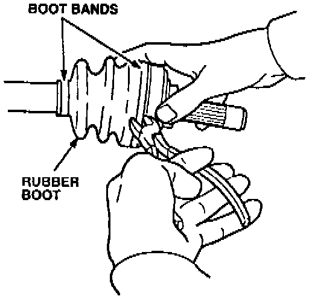
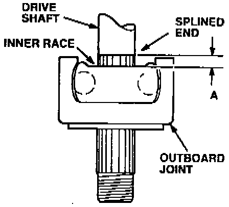
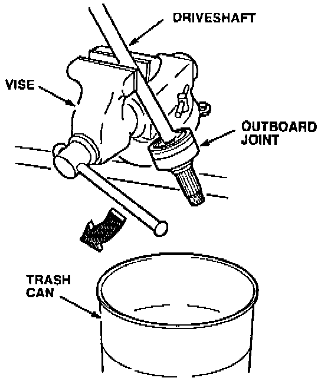
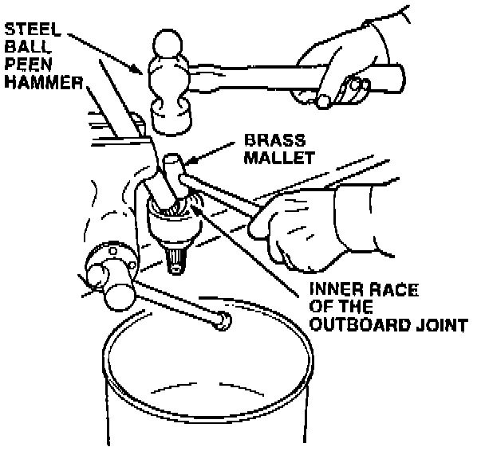
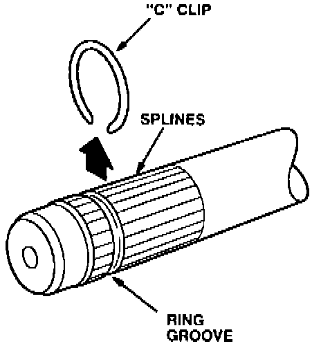
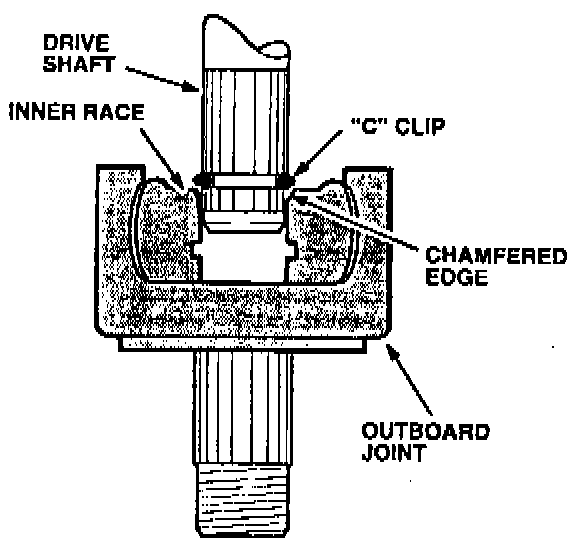
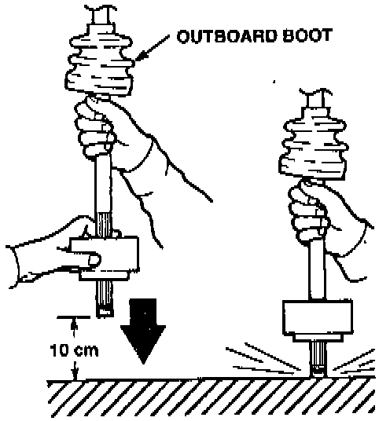
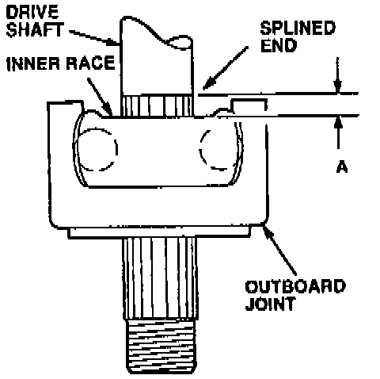
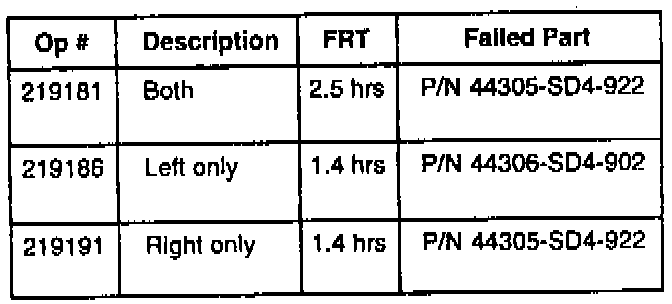

CV Joint - Clicking Noise While Turning
February 7, 1995YEAR [NEW]
1986-93
1986-95
MODEL
INTEGRA
LEGEND
VIN APPLICATION
ALL
BULLETIN NO.
92-009
Clicking Noise While Turning
(Supersedes 92-009, dated April 20, 1992)
SYMPTOM
A clicking noise is heard while making right or left turns at 10 mph or less.
PROBABLE CAUSE
^ Worn outboard driveshaft joint.
[NEW]
^ The outboard driveshaft joint boot has split, allowing contamination to enter the joint and damage it. (This probable cause is more prevalent in cold climates.)
DIAGNOSIS
(Driving method)
1. Drive the car in a circle in an open parking lot at approximately 10 mph with the brakes lightly applied.
2. Have an assistant stand in the center of the circle and listen for the clicking noise.
3. Drive the car in the opposite direction. The assistant should be able to tell which axle is making the noise.
(On-hoist method)
1. Raise the car on a hoist and start the engine.
2. With the transmission in first gear (manual transmission) or D4 (automatic transmission), increase the engine speed to 2000 rpm.
3. While maintaining the same throttle position, apply the brakes to load the engine speed to 1500 rpm.
4. Turn the wheels slowly to full left and full right positions. Have an assistant listen to determine which axle is making the noise.
NOTE:
A driveshaft with a light degree of noise may not be detected by this on-hoist method.
CORRECTIVE ACTION
Replace the noisy outboard driveshaft joint with the appropriate kit listed under PARTS INFORMATION.
1. Remove the driveshaft as described in Section 16 of the appropriate service manual.

2. Cut the two boot bands and the outboard joint boot, then remove them from the driveshaft.
CV Joint And Shaft:

3. Wipe off the grease to expose the outboard joint. Measure and record distance "A" (from the splined end of the driveshaft to the inner race) as a reference for reassembly.

4. Carefully clamp the driveshaft in a vise with the outboard joint facing down. Clamp the driveshaft tight enough to prevent it from moving but not so tight as to damage or distort it.

5. Position a trash can underneath the driveshaft to catch the outboard joint.
6. Place the head of a brass mallet on the inner race of the outboard joint. Using a large steel ball peen hammer, strike the head of the brass mallet sharply two or three times.
7. If the outboard joint does not come loose after two or three hits, rotate the driveshaft 180° and try again from the opposite side. If the joint still will not come loose, replace the driveshaft assembly.
8. Remove the driveshaft from the vise.
CV Shaft And Retainer Clip:

9. Remove and discard the "C" clip from the driveshaft. Clean and inspect the driveshaft splines and ring groove for burrs or other defects.
10. Install the new outboard joint boot provided in the kit. Slide it slowly onto the driveshaft to avoid damaging the boot.
11. Install the new "C" clip in the ring groove of the driveshaft.
CV Joint Cross Section:

12. Insert the driveshaft in the new outboard joint. Make sure the "C" clip is centered on the shaft and is resting against the chamfered edge of the inner race.
CV Joint Assembling:

13. To drive the outboard joint on the rest of the way, pick up the assembly and let it fall from about 10 cm (4 to 5 inches) onto a hard surface.
[NOTICE]
Do not use a hammer; excessive force may damage the driveshaft.
Spline Measurement:

14. Measure distance "A" (from the end of the splines to the inner race of the joint). If the distance is more than your measurement in Step 3, repeat Step 13.
15. When distance "A" equals your measurement in Step 3, the "C" clip should be seated in the joint. Tap on the inner race with a plastic hammer to make sure the joint does not move on the driveshaft.
16. Fit the small end of the boot into the boot groove on the driveshaft.
17. Install the small boot band provided in the kit. Bend both sets of locking tabs over, then tightly tap them flat.
18. Pack the outboard joint with the grease included in the kit. Pack the outboard boot with the remaining grease. then fit the boot over the outboard joint.
19. Install the large boot band provided in the kit. Bend both sets of locking tabs over, then lightly tap them flat.
20. Reinstall the driveshaft assembly in the car. Refer to Section 16 of the appropriate service manual.
PARTS INFORMATION
Driveshaft Outboard Joint Kit:
1986-89 Integra (ALL):
P/N 44014-SE0-930
1990-93 Integra with ABS: [NEW]
P/N 44014-SK7-J71
1990-93 Integra (ALL) except ABS: [NEW]
P/N 44014-SK7-J01
1986-90 Legend Coupe and Sedan (ALL):
P/N 44014-5D4-950
1991-95 Legend Coupe and Sedan (ALL): [NEW]
P/N 44014-SP0-C00
WARRANTY CLAIM INFORMATION
In warranty:
The normal warranty applies.
Out of warranty:
Any repair performed after warranty expiration may be eligible for goodwill consideration by the District Technical Manager or your Zone Office. You must request consideration, and get a decision, before starting work.

Labor operation: Replace driveshaft outboard joint(s), and road test.
Defect code: 042
Contention code: B07